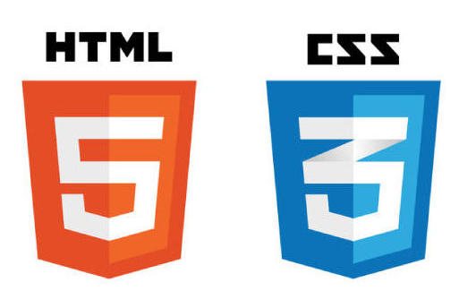

- Skills -

HTML / CSS
指定された通りにカラーやサイズなど
丁寧にお作りします。
JavaScript
細かいアニメーションなど
動きのあるサイトを作成します。

JQuery
このポートフォリオではjQueryプラグインのparticles.jsとt.min.jsを使用しています。
workspartnerは学生4人でWeb制作を行っているサークルです。
2019/11から活動を開始。週に1回は進捗報告会を開いています。
主な業務はHTML/CSS/JavaScriptコーディングなど。
HTML / CSS
指定された通りにカラーやサイズなど
丁寧にお作りします。
JavaScript
細かいアニメーションなど
動きのあるサイトを作成します。
JQuery
このポートフォリオではjQueryプラグインのparticles.jsとt.min.jsを使用しています。